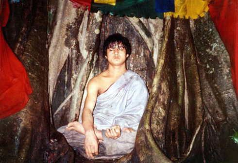
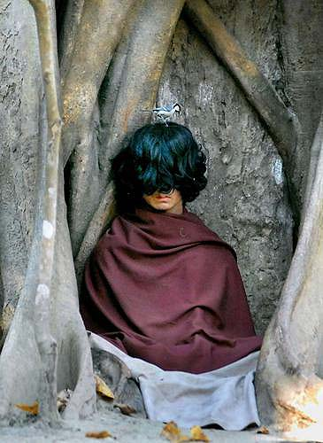

尼泊尔少年打坐半年不吃不喝

在菩提树下打坐的班坚
尼泊尔各大媒体近来争相报道一个灵异现象。在加德满都东南150公里处的巴拉县邦加尔村里，一位叫拉姆·巴哈杜尔·班坚的少年被不少人认为是“释迦牟尼转世”。班坚从今年5月开始，在小镇附近的丛林里修行打坐，据说他半年来不吃不喝，但一切正常，吸引了10多万尼泊尔人和印度人前来观看。 
班坚来自尼泊尔北部的达芒族，这个大约有150万人口的民族原来信原始本教，后改信佛教。班坚的父母都是普通农民，他原是巴拉县一所中学的学生，后来辍学在家。一年半以前去了印度，和密宗大师建立了联系。班坚平时性格内向，看不出与常人不同。今年5月，班坚突发奇想，说要到小镇外面的丛林里修行。他每日端坐在菩提树下，身披袈裟，单肩裸露，双目微闭，而且还不吃不喝。
巴拉县距佛祖释迦牟尼的诞生地兰毗尼200多公里，据说班坚的母亲和释迦牟尼的母亲叫同一个名字，人们很自然地把班坚和年轻时的释迦牟尼联系起来。消息传开，许多人以为他是佛祖转世，成千上万的人拥向小镇参观，场面非常壮观。为了防止秩序失控，尼泊尔政府在班坚打坐的菩提树周围设立了警戒线，派有警察守卫。当地农民组织了80多人为班坚服务，兼做导游，游客的捐款用来给他们发工资。有些旅行社甚至开辟了从加德满都到巴拉县的旅游专线，鼓动人们前去参观，借机大捞一笔。
面对喧嚣的场面，小班坚倒是比较能沉得住气。他通过其兄向外界宣布，他既非佛祖转世，也不是释迦牟尼再生，只想安静地在这里修行，并称他准备再修炼6年。他的家人也一再呼吁，请大家不要去触摸他的身体，不要影响班坚修炼。
各方说法不一
医生检查，班坚并未出现缺水缺食的生理表现。对于这种现象人们议论纷纷，有专家认为，一些具有超强忍耐力的人，通过意念控制，使自己进入类似休眠的状态，把新陈代谢降到最低水平，在半年内停止饮食是有可能存活下来的。印度教徒一向讲究通过苦行进行修炼，包括断食、凝视火焰、长时间独脚站立、唱赞歌时停止呼吸等。但也有人认为，班坚半年禁食禁水的报道出现在11月底，无法证明他在过去的半年里没有进食，因此这种说法并不可信。还有人提出，班坚在晚上做些什么人们无法监督，是否偷偷进食人们也不得而知。不少佛教组织也质疑此事，要求进行调查。尼泊尔政府社会福利部已经邀请尼泊尔皇家科学院的学者，对这一现象进行调查和研究，希望以科学的态度引导人们正确认识。
佛教人士有所怀疑
到目前为止，前往观看的人们更多是抱着好奇的心理去看热闹，尚未出现顶礼膜拜的现象。尼泊尔国内媒体对此事进行了广泛报道，但也未认定班坚就是佛祖转世。一些佛教人士指出，佛教讲究佛、法、僧三宝，其中法是至关重要的一环。15岁的班坚在佛学上一无造诣，二无建树，仅仅凭着真假莫辨的禁食传说就说他是转世佛祖，确实有些牵强。
记者采访了一些尼泊尔当地人，他们表示在本国出现这种现象并不奇怪。尼泊尔是一个宗教氛围浓厚的国家，全国80%的人口信奉印度教。绝大多数人相信轮回转世，万物有灵，因此很容易相信各种灵异现象。十几年前，加德满都突然盛传印度教里最大的神———甘尼诗神要喝牛奶，结果成千上万的尼泊尔妇女提着瓶瓶罐罐，去神庙里给甘尼诗石头神像喂牛奶。当时的尼泊尔政府不得不派科学家调查此事，并发表声明辟谣，事情过了很久才平息下来。尼泊尔政府希望随着调查的展开，班坚禁食禁水之谜能够尽快得到答案，佛祖转世的神秘面纱也会随之被揭开。▲
《环球时报》(2005年11月30日第五版)
----------------------
《灵修少年》 带给世人的讯息
Discovery（探索频道）曾经制作一个非常轰动的节目，节目名称为《灵修少年》（The Boy With
Divine
Powers）；节目播出后，世界各大媒体竞相报导这名少年。话说这名少年拉姆?巴哈?杜尔班坚，於2005年5月16日告诉家人：「不要杀动物，不要饮酒，因为这些会伤害自己。」之后他便离家到树林里打坐。当时年仅15岁的少年拉姆仿照佛陀一般，十个月以来在树下静坐不吃不喝，吸引了成千上万的朝圣者蜂涌而至；当地居民在少年拉姆身旁围起护栏，避免外人干扰少年的静坐。
http://v.ku6.com/show/Y0c24vI2RdAOvvQF.html
Discovery节目制作小组决定实地开拔至尼泊尔，以摄影机全程拍摄四天，计九十六个小时， 确定少年是否真如村人所言如佛陀般入定。
透过先进的科技，节目制作小组发现少年拉姆即使是在无人在场的情况之下，仍然盘坐不动，不饮不
食。在当地五到十度的低温下餐风露宿，但仍维持良好的生理状态。而且还会不自主地流汗，体内生理机能运作良好，甚至有如运动般地发热，让身体不致在低温的环境下失温。节目制作小组又另外连续日夜拍摄了几天，结果少年拉姆仍未进食饮水，因此媒体们给了他一个封号「小活佛」。拉姆的亲人表示，他将持续静坐六
年。
2006年03月11日英国BBC中文网国际新闻
尼泊尔15岁少年在树下打坐九个月，报导中说医疗团队在五公尺的距离观察，他在半小时内只吸气三次，咽口水一次，许多欧美人士，也因此一事件而对佛教产生兴趣，但于日前，依外电报导，尼泊尔15岁少年因太多人来打扰，故己停止静坐，离开大树。
尼泊尔佛祖转世半年绝饮绝食
2005年11月27日加德满都路透加报导，尼泊尔当局周日敦促宗教组织和科学家叉查证一个谜团，一名被当地人广泛流传并视作佛祖转世的苦修少年的情况。最近数周至少有10万名来自尼泊尔和邻国印度的信徒，来到尼泊尔东南密林深处，为的是一睹15岁的班坚Ram
Bahadur Bamjon的真面目，班坚的同伴表示，他在禁食绝水的情况下已经苦修了六个月。
班坚所在巴拉Bara地区位于加德满都东南150公里，当地行政长官苏贝迪Shanta Raj Subedi表示，他已经要求佛教组织伦比尼发展信托基金会LumbiniDevelopment
Trust和尼泊尔皇家科学与技术学院Royal Nepal Academy of Science and Technology调查事情真相。
苏贝迪说导这名男孩号称在不吃不喝的情况下生存了这么长时间，我们希望调查出真相。
尼泊尔15岁少年在树下打坐六个月
2006年3月11日英国电讯报尼泊尔一名少年在南部森林中打坐冥想六个月，这段期间他完全没有进食，已经被当地人视为活佛转世，称他为小释迦牟尼佛。这名现年15岁的少年博乔恩在当地被视为佛祖再世，因为他和释伽牟尼佛一样，都坐在树下打坐冥想，而博乔恩的母亲恰巧和佛祖母亲同名。
释伽牟尼佛在西元前大约543年时，于菩提树下冥想49天得道，而博乔恩已经在树下坐了6个月，期间不吃不喝甚至连上厕所都没有。
博乔恩母亲表示，博乔恩是自己跑道树林里打坐，这应该是神的引领，此事在当地造成轰动，已经吸引数千人来朝圣，并有人以五卢比的价格在市面上贩售少年打坐照片，当地记者拉米查迷说，远近驰名这是唯一的热门话题。
当地政府不但尊敬这名少年，还在他打坐的那颗树四周围围起黄色布条，防止外人骚扰他；地方政府也呼吁尼泊尔中央派人协助处理庞大的朝圣群众，并派科学家前来调查。
据传博乔恩上周曾被蛇咬伤，五天之后他开口说话，告诉人们不要叫我佛陀，我没有佛陀的能力，只到达仁波切的境界，还说一只蛇咬了我，但是我不需要治疗，我需要打坐六年，也有人看到他的额头发光，这一点尼泊尔负责处理朝圣人潮的官员也说，那到光“就像点燃火把一样。
虽然博乔恩一直没进食，但是医师在五公尺距离外观察认为，他仍然有生命迹象。2007年负责保护拉姆静坐的委员会，透过尼泊尔当地的广播电台，向众人布达拉姆?巴哈?杜尔班
坚将首次向众人开示的讯息。2007年8月2日，小活佛拉姆在尼泊尔巴拉区的丛林，向众人作了以下的开示：
「有个和平讯息，要带给这个世界。
杀生、暴力、贪婪、愤怒和诱惑，已使人类陷入绝境。
可怕的风暴已降临人世，并且正迈向毁灭之途。
拯救世界的唯一方法，就是行正道。
当人们不走修行的正道时，这险恶的世界必遭破坏；
因此应该过著灵性的生活，并把此讯息告知他人。
不要阻碍、生气或怀疑我打坐的使命。
我只告诉你们方法，但你们得自己去寻找－我想成为什麼？或我想做什麼？未来就会知道。
....我已永远放下对生活和家庭的执著。
我努力拯救众生，但对这无常世界来说，我的生活方式，只是一种娱乐。
由於诸佛的修行和奉献，因此让世界更好更快乐。
这很重要，但很难了解何谓修行和奉献；
虽然这个简单的道理很容易了解，但人类却不了解它。
最终有一天，我们都会离开这无常的世界，
老朋友终将离去，家人也将化为乌有，我们都得下累积的财富和资产。
....将灵性的知识和讯息，传播到世界各地。
告诉所有人，世界和平的讯息。
寻求正道，就能拥有智慧。
....人类的所做所为，将会摧毁全体人类和生命。
以宗教的名义，却行杀生、暴力、嗔恨嫉妒、分化之实。
只有一个上帝，上帝有形，
所有人的灵魂都一样，只是传统习俗有异；
时时奉行宽容、慈悲、非暴力、和平，这就是我想传达给同胞和世人的讯息。
人类真正的宗教，是不断寻求真理；人唯有寻求真理，才能受益。
尽管修行法门众多，人类社会却被混乱、贪婪、情感、愤怒和嫉妒禁锢住，因此世界正逐渐毁灭。
世人现在必须三思，人永远不该忘记履行修行和社会的义务。
不可杀生，不可心存暴力、贪婪、嫉妒、执著，不应作恶。
人往生后，很难转世再来当人；人人都以为，死后没有轮回转世，有的！
善良有德才能当人，前世行善积德，才有当人的福报。
在内心涵养宽容、慈悲、非暴力、和平，必须以救世之道美化世界，
我会继续冥思打坐，专注於发展智慧，直到大彻大悟，证得无上正等正觉，救渡众生。
谨向大觉悟合十。」
少年拉姆的哥哥刚戞?班坚进一步说明，少年拉姆对茹素及食用动物食品的看法：
「他曾多次提到，杀任何动物都是暴力。杀生很残酷，杀生的人没有将心比心－
自己皮肉被割之痛。不应该杀动物，杀动物来吃是贪婪的表现。人类变得暴力，是因为爱吃肉。他跟我们解释过，如果沉迷於口腹之欲，会变得贪婪；他是这麼说的，他劝我们不该吃肉。我们家自他开始打坐，
就开始吃素。我们全家都吃素，我们都遵守他打坐出关后的指示。」
受到小活佛拉姆的影响，负责保护拉姆静坐的委员会会长班巴达霍尔喇嘛，也改吃素了。他说：「从小
拉姆?巴哈?杜尔班坚就不喜欢暴力行为，反对杀生，他提倡非暴力之道后，我们现在也吃素了，觉得很自在。以前吃荤食，会感到沈重、造业障、感染疾病，我吃素以后，觉得身体很轻松。」
拉姆?巴哈?杜尔班坚的和平讯息之一，就是人人都应该修行。
委员会会长班巴达霍尔喇嘛表示：「...他认为人不该有阶级种族之分，所有宗教都一样，只是文化
背景和名称不一样。只有一个上帝，宗教不该分别你我，他这麼告诉我们。....他之所以待在丛林里，就是要广传他所领悟的智慧，他是这麼说的。...我们看到一个十八、九岁的少年，开始到这大丛林打坐，我们曾想要送他回
家；不过现在全世界都知道这件事了。我们看经典上说，佛陀打坐后开悟，也许他想要提醒世人这种修行方式。」